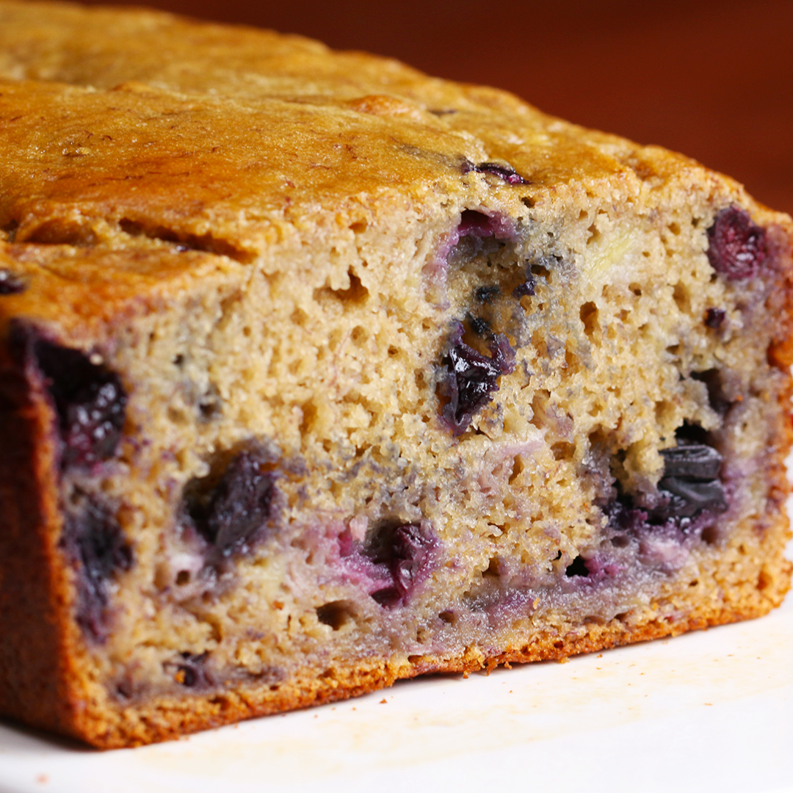

Home

Description
- Servings: 10 Slices
- Calories per Serving:175
This simplified version of the Indian classic combines chicken, tomato sauce, and a slew of aromatic spices all in one pot to make a flavorful dinner that’s just as good as the version you’ll get at restaurants — only way easier to make. Serve it over rice with a bit of cilantro to balance the heat and dinner is done.
Ingredients
- 3 ripe bananas
- 2 eggs
- ½ cup 2% plain greek yogurt(120 g)
- ⅓ cup honey(115 g)
- 1 teaspoon vanilla extract
- 1 teaspoon baking soda
- 1 ½ cups wheat flour(195 g)
- 1 cup blueberry(100 g)
Steps
- Preheat the oven to 350˚F (180˚C)
- In a medium bowl, mash bananas. Mix eggs, yogurt, honey, vanilla extract, and baking soda into mixture.
- Add flour and mix.
- Add blueberries and gently fold into mixture.
- Pour the batter into a greased 9 x 5-inch (23 x 13 cm) bread pan. Bake for about 50 mins, or until a toothpick comes out clean from the middle of the bread. (Baking times may vary, so keep an eye on the bread.)
- Allow to cool for 15 minutes before serving.
- Enjoy!